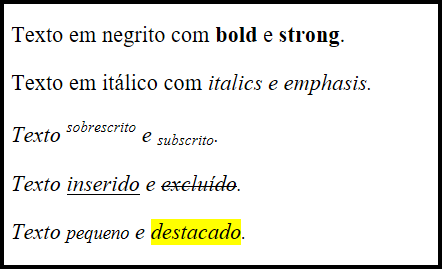

<link rel="stylesheet" href="../css/style_texto.css">
<article>
    <h2>TAGS DE TEXTO</h2>
    
        <p>As tags de texto definem textos, estilos de fonte, parágrafos, spans, quebras de linhas, etc. Entre elas temos:</p>
    <ul>
        <li><b>P: </b>Principal tag, compõe o parágrafo.</li>
        <li><b>Span: </b>Apesar de ter uma funcionalidade e características parecidas com os parágrafos, costumam ser utilizadas apenas para pequenas informações, como legendas de um formulário, legendas de uma imagem, etc. Também pode ser utilizada para formar um container.</li>
        <li><b>Pre: </b>Tag utilizada para representar texto pré-formatado. Muito utilizada para inserir códigos.</li>
        <li><b>B: </b>Transforma o conteúdo em negrito.</li>
        <li><b>I: </b>Transforma o conteúdo em itálico.</li>
        <li><b>BR/: </b>Essa tag não necessita de fechamento, ela executa a função de quebra de linha.</li>
        <li><b>HR/: </b>Essa tag não necessita de fechamento, ela forma uma linha horizontal.</li>
    </ul>
</article>
   